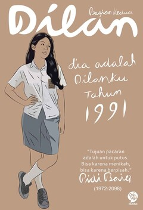

Dilan 1991
Sinopsis:
Novel kedua ini menceritakan masa mereka berdua berpacaran yang dinyatakan dengan lisan dan tulisan bermaterai.
Milea pun kembali menceritakan kisah percintaannya dengan Dilan. Seperti orang jadian pada umumnya, Milea mengalami masa-masa yang indah di SMA sesudah resmi menjadi pacarnya Dilan.
Ketika guyuran hujan menerpa, Dilan menggunakan motor CB dengan Milea di belakangnya. Milea dengan erat memeluk Dilan. Mereka berdua jalan-jalan menyususri Jl. Buah Batu sembari ketawa riang, itu semua berkat Dilan yang selalu membuat hari-hari Milea bahagia.
Jawaban yang diberikan Dilan selalu saja membuat Milea tersenyum. Dilan pun termasuk siswa yang cerdas, buktinya ia selalu mendapatkan rangking satu atau dua di kelasnya. Meski begitu Milea khawatir dengan Dilan yang bergabung dengan geng motor, karena Milea takut terjadi hal buruk yang akan menimpa Dilan karena geng motornya.
Ketika itu, sekolah tidak ada kegiatan belajar mengajar sebab para guru sedang rapat. Milea merasa tidak enak dengan kejadian Dilan berkelahi dengan Anhar sebab membela dirinya. Milea merasa takut dan cemas jika nantinya Dilan dikeluarkan dari sekolah. Tiba-tiba, datang Piyan memberitahu Milea bahwa Dilan berkelahi di warungnya Bi Eem.
Milea pun panik dan segera ke tempat Dilan berada. Ketika Milea bertanya berkelahi dengan siapa, Dilan menjawab "Agen CIA". Mendengar jawaban dari Dilan seperti itu membuat Milea kesal dan khawatir, apabila terjadi sesuatu dengan kekasihnya itu. Seperti biasa, Dilan selalu tenang dalam menghadapi masalah.
Sampai pada suatu malam, Milea ditelpon Piyan, bahwa Dilan sudah tahu orang yang mengeroyoknya yang disebut agen CIA tempo hari. Ternyata yang mengeroyoknya adalah kakak Anhar. Dilan pun berenca untuk membalas, dia memanggil teman-temannya untuk balas dendam,.
Ketika itu Milea yang ingin menyusul untuk menggagalkan rencanya Dilan bingung karena tak ada kendaraan, untungnya Yugo anaknya Tante Anis yang baru pindahan dari luar negeri sedang berada di rumah Milea. Milea pun berpura-pura mengajak Yugo jalan-jalan. Pada akhirnya, ilea bertemu dengan Dilan. Dia membujuk Dilan supaya membatalkan rencannya dengan ancaman akan memutuskan hubungan mereka.
Perasaan Milea yang takut dengan keselamatan kekasihnya itu sangat besar, sampai-sampai kata putus sering keluar dari Milea lalu disusul dengan tamaparan darinya. Dilan tidak saja mengerti, kesedihan yang melanda hati Milea, sebab Dilan tidak ingin dikekang, dari peristiwa itu Dilan menjauh dari Milea.
Sampai dengan selesai, Milea kembali ke Jakarta dan kuliah di sana. Sedangkan Dilan kuliah di universitas ternama kota Bandung. Jarak antar keduanya menjauh, tapi suasana hati Milea masih sama, hanya kepada Dilan. Makin lama Dilan menghilang, Milea berusaha menghubungi Dilan, akan tetapi keluarga Dilan sudah pindah rumah. Milea pun kehilangan jejaknya Dilan.
Sampai akhirnya, Milea bertemu Herdi yang merupakan kakak tingkat tempat dia kuliah . Herdi mulai mengisi keseharian Milea ,sampai mereka menikah. Milea selalu mencintai Dilan, tapi Dilan sudah memiliki kekasih baru.
Baca Fullnya